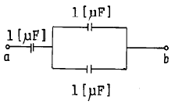
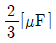
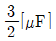
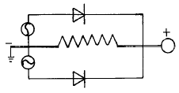
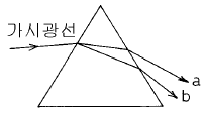
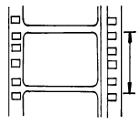

영사기능사 (2002-01-27 기출문제)
1과목: 전기일반
1. "두 자극 사이에 작용하는 자력의 크기는 두 자극의 크기를 곱한 것에 비례하고 자극간 거리의 제곱에 반비례한다 "는 법칙은?
- 파라데이의 법칙
- 주울의 법칙
- 후레밍의 법칙
- 쿨롱의 법칙
(정답률: 알수없음)

2. 60[Hz]의 각속도[rad/sec]는 약 얼마인가?
- 2π
- 180
- 314
- 377
(정답률: 알수없음)
3. 그림 ab에서 합성 정전 용량은?



- 2[μF]
- 3[μF]
(정답률: 알수없음)
4. 어떤 회로에 100[V]의 전압을 가했더니 20[A]의 전류가 흘렀다. 이 회로의 저항[Ω]은?
- 0.2[Ω]
- 5[Ω]
- 50[Ω]
- 2,000[Ω]
(정답률: 알수없음)
5. 다음은 저항의 단위 관계를 나타낸 것이다. 맞는 것은?
- 1[KΩ] = 1000[Ω]
- 10[KΩ] = 1000[Ω]
- 1000[KΩ] = 1[Ω]
- 0.1[KΩ] = 10000[Ω]
(정답률: 알수없음)
6. 계자 권선과 전기자 권선이 병렬로 된 전동기는?
- 직권
- 내분권
- 외분권
- 분권
(정답률: 알수없음)
7. 아래 그림은 무슨 회로인가?

- 증폭회로
- 정류회로
- 발진회로
- 검파회로
(정답률: 알수없음)
8. 5[A], 100[V], 역률 0.8인 회로의 전력 [W]은?
- 300
- 400
- 500
- 600
(정답률: 알수없음)
9. 5[V]의 기전력으로 300[C]의 전기량이 이동되었다면 몇[J]의 일을 하게 된 것인가?
- 60[J]
- 295[J]
- 3⑤[J]
- 1,500[J]
(정답률: 알수없음)
10. 전력량이란?
- 전류가 하는 일의 양
- 수초 동안에 전달되는 에너지 양
- 전기가 하는 일의 양
- 저항에서 발생하는 에너지 양
(정답률: 알수없음)
11. 전동기나 발전기에 규소 강판을 성층해서 사용하는 이유는?
- 전기자 권선에 의한 저항손실을 줄이기 위하여
- 철부분의 손실을 줄이기 위하여
- 회전부분의 풍손을 줄이기 위하여
- 회전부분의 마찰 손실을 줄이기 위하여
(정답률: 알수없음)
12. 6극 교류발전기로 60[Hz]의 교류를 발생시키려면 매분 몇 [rpm]으로 회전시켜야 하는가?
- 1800
- 1200
- 900
- 600
(정답률: 알수없음)
13. 두 파동의 위상차에 의한 파동의 간섭을 설명한 것 중 옳게 설명한 것은?
- 2πrad의 정수배일 때 합성파의 진폭이 최대로 된다.
- π/2rad의 정수배일 때 합성파의 진폭이 최대로 된다.
- πrad의 홀수배일 때 합성파의 진폭이 최대로 된다.
- πrad의 짝수배일 때 합성파의 진폭이 최대로 된다.
(정답률: 알수없음)
14. 초점거리 8cm인 볼록렌즈의 전방 12cm되는 곳에 물체를 놓았다. 상은 물체의 몇 배이며, 무슨 상인가?
- 1.5배의 정립실상
- 1.5배의 도립실상
- 2배의 정립실상
- 2배의 도립실상
(정답률: 알수없음)
15. 영사시 상영 포커스(focus)를 맞춘다는 것은 무엇을 뜻하는가?
- film을 아파츄어에 밀착시킨다는 뜻
- film과 렌즈와의 초점거리를 조정한다는 뜻
- 관람석을 조명으로 조절한다는 뜻
- 화면의 상하로 흔들림을 조정한다는 뜻
(정답률: 알수없음)
2과목: 렌즈 및 광원
16. 스크린에 선명한 화면이 투명되었을 때 렌즈의 초점거리란?
- 영사창의 필름에서 렌즈중심까지의 거리를 뜻한다.
- 광원에서 스크린까지의 거리를 뜻한다.
- 광원에서 렌즈까지의 거리를 뜻한다.
- 영사창에서 스크린까지의 거리를 뜻한다.
(정답률: 알수없음)
17. 영사용 전극인 크세논 램프를 다룰 때의 주의사항을 설명한 것으로 올바른 것은?
- 램프하우스내에 램프를 삽입하기 직전까지는 램프를 보호하고 있는 플라스틱 케이스를 벗기지 말 것
- 램프하우스내에 램프를 삽입한 후 케이스를 벗길 때에는 전원을 공급해 본 후에 실시할 것
- 램프하우스내에 램프를 삽입할 때는 전극의 구분없이 빠른 시간내에 실시토록 할 것
- 램프 보호를 위한 플라스틱 케이스는 구입한 후 사용전까지는 효율적 관리를 위해 케이스를 벗겨 놓을 것
(정답률: 알수없음)
18. 영화 상영시 빛과 거리의 관계를 바르게 설명한 것은?
- 빛의 세기는 거리에 비례한다.
- 빛의 세기는 거리 제곱에 비례한다.
- 빛의 세기는 거리에 반비례한다.
- 빛의 세기는 거리 제곱에 반비례한다.
(정답률: 알수없음)
19. 청색, 녹색, 적색인 세개의 광(光)이 포개 맞춰진 곳은 어떤 색이 나타나는가?
- 백색
- 청색
- 황색
- 흑색
(정답률: 알수없음)
20. 가시광선을 프리즘에 비추면 그림과 같이 빛이 분산된다. 이 경우 굴절률이 가장 큰 가시광선 b의 색깔은?

- 초록
- 보라
- 빨강
- 노랑
(정답률: 알수없음)
21. 하늘이 파랗게 보이는 것은 빛이 ( ① )하는 성질 때문이며, 구름이 하얗게 보이는 것은 빛이 ( ② )하는 성질때 문이다. 괄호 안에 알맞는 용어는?
- ① 굴절 ② 산란
- ① 회절 ② 반사
- ① 산란 ② 굴절
- ① 산란 ② 반사
(정답률: 알수없음)
22. 다음의 영사렌즈에서 가장 밝은 것은?
- F2.0
- F1.9
- F1.8
- F1.2
(정답률: 알수없음)
23. 트랜지스트의 증폭회로에 대한 설명중 틀린 것은?
- 베이스 접지회로의 입력은 이미터가 된다.
- 콜렉터 접지회로의 입력은 베이스가 된다.
- 베이스 접지회로의 입력은 콜렉터가 된다.
- 이미터 접지회로의 입력은 베이스가 된다.
(정답률: 알수없음)
24. 트랜지스터 증폭회로에서 콜렉터 회로에는?
- 항상 역방향 바이어스를 공급한다.
- 항상 순방향 바이어스를 공급한다.
- PNP에는 순방향, NPN에는 역방향 바이어스를 공급한다.
- PNP에는 역방향, NPN에는 순방향 바이어스를 공급한다.
(정답률: 알수없음)
25. 증폭기의 입력전력이 4[mW], 출력 전력이 40[W]일 때의 전력 이득[dB]은?
- 4
- 16
- 40
- 160
(정답률: 알수없음)
26. 실리콘 정류기는 무엇을 접합 이용한 정류체인가?
- 정류판
- PN
- 캐소드
- 카본
(정답률: 알수없음)
27. 정전압 안정 직류회로에 기준 전압용으로 주로 사용되는 소자는?
- 더미스터
- 바리스터
- CdS
- 제너다이오드
(정답률: 알수없음)
28. 콘덴서 입력형을 초오크 입력형의 평활회로와 비교했을 때 틀린 내용은?
- 비교적 적은 용량의 정류기에 사용
- 기동시 전류가 흐르지 않는다.
- 전원전압의 변동율이 크다.
- 출력 전압이 크다.
(정답률: 알수없음)
29. 동전형 스피커에 대한 설명 중 옳지 않은 것은?
- 다이나믹 스피커라고도 부른다.
- 음질은 코온의 직경이나 구조에 따라 다르다.
- 일반적으로 주파수 특성은 다른 스피커에 비해 나쁘다.
- 코일의 임피던스는 낮으며 400[Hz]에서 4-16[Ω]정도의 것이 많다.
(정답률: 알수없음)
30. 음의 3요소로 옳은 것은?
- 고저, 파형, 진동수
- 세기, 맵시, 진폭
- 맵시, 진폭, 파형
- 고저, 세기, 음색
(정답률: 알수없음)
3과목: 증폭기 및 녹음재생
31. 다음 중 음속이 빨라질 때의 함수관계로 옳은 것은?
- 기압이 높아질 때
- 기온이 높아질 때
- 진동수가 높아질 때
- 음의 전달방향과 반대로 바람이 불 때
(정답률: 알수없음)
32. 단일 트랜지스터로 입력신호 파형을 가장 충실히 출력할 수 있는 증폭방식은?
- A급 증폭
- AB급 증폭
- B급 증폭
- C급 증폭
(정답률: 알수없음)
33. 영사중 스크린 화면의 왼쪽이 흐린 경우 영사 반사경을 조정하고자 할 때 맞는 내용은? (단, 반사경 뒤에서 화면을 보았을 때)
- 반사경 오른쪽을 앞으로 민다.
- 반사경 왼쪽을 앞으로 민다.
- 반사경 위쪽을 앞으로 민다.
- 반사경 아래쪽을 앞으로 민다.
(정답률: 알수없음)
34. 시각의 잔존에 대하여 틀린 설명은?
- 밝기에 따라 잔존시간은 다르다.
- 사람에 따라 잔존시간의 차이가 있다.
- 사람의 잔존표준시간은 약 1/16초 가량이다.
- 화면의 크기에 따라 잔존시간이 다르다.
(정답률: 알수없음)
35. 일반 극장에서 쓰이고 있는 영사막(映寫幕, 스크린)은 어떤 식이 쓰이고 있는가?
- 반사식 스크린
- 투과식 스크린
- 흡수식 스크린
- 굴절식 스크린
(정답률: 알수없음)
36. 양호한 영사스크린의 조건으로 틀린 것은?
- 연색성이 좋을 것
- 반사율이 좋을 것
- 높은 광도를 바랄 수 있는 것
- 지향성이 없을 것
(정답률: 알수없음)
37. 필름위의 영상을 텔레비젼 신호로 변환하는 장치로 맞는 것은?
- EBU
- ISO
- 텔레시내 영사기
- 영사해석용 영사기
(정답률: 알수없음)
38. 다음 영사기기 중 서로 관계가 없는 것은?
- 셧터와 후릿카
- 방화장치와 카바너
- 십자차와 로울러
- 영사창과 마스크
(정답률: 알수없음)
39. 영사기의 스프라케트 로울러와 스프라케트 사이의 틈새에 대한 내용으로 알맞는 것은?
- 사이가 없이 붙어 있어야 필름이 이탈되지 않는다.
- 필름의 두께와 같아야 한다.
- 필름두께의 2배 정도이다.
- 필름두께의 1/4배 정도이다.
(정답률: 알수없음)
40. 35mm 영사기의 영사 셔터는 필름의 간헐운동에 따라서 영사시 빛을 여닫는 장치로서 1초간에 빛을 몇 회 차단하는가?
- 12회
- 24회
- 48회
- 96회
(정답률: 알수없음)
41. 영사기 안전레바의 설치 목적은?
- 방화장치
- 방전장치
- 방수장치
- 방염장치
(정답률: 알수없음)
42. 영사용 아크 전극으로 탄소봉을 사용했던 이유는?
- 탄소봉은 경제적이기 때문이다.
- 탄소봉은 순탄소로 만들어지지 않았기 때문이다.
- 탄소는 전기는 잘 흐르나 내열성이 없기 때문이다.
- 탄소는 전도체이며 내열성이 있기 때문이다.
(정답률: 알수없음)
43. 크세논 램프(Xenon Lamp)의 특성중 옳지 않은 것은?
- 고휘도 점광원으로 수천 m의 예민한 직선 광선(beam)을 만들 수 있다.
- 그 빛의 에너지는 강력한 연속스펙트라로 이루어져 가시광의 분포는 자연형광에 가깝다.
- 관 내부는 고열로 인한 봉입물의 산화를 방지하기 위해 질소가스를 넣는다.
- 시동에 고전압이 필요하기 때문에 특수한 시동 장치가 필요하다.
(정답률: 알수없음)
44. 영사기 하부매거진의 필름이 정상으로 감기지 않을 때 어느 부위에 이상이는가? (단,부매거진은 정상임)
- 모타의 회전이 정속이 아니다.
- 매거진 중심축이 휘었거나 리일이 불량이다.
- 간헐운동장치가 정상이 아니다.
- 사운드 드럼이 정상이 아니다.
(정답률: 알수없음)
45. 사운드헤드(soundhead)부의 설명으로 잘못된 것은?
- 영사중 엑사이더램프와 쏠라셀 사이에서 불빛을 불규칙하게 필름에 비추는 부분이다.
- 엑사이더램프로부터 음대에 초점을 맞추어 주는 광학장치 기구이다.
- 쏠라셀에 빛을 비치면 증폭할 수 있는 전압이 발생하게 되는 부분이다.
- 필름이 정속스프라케트를 지나 권취스프라케트와 매거진 로라를 통하여 하부 매거진으로 입하기 전의 부분이다.
(정답률: 알수없음)
4과목: 영사기와 필름의 구조원리
46. 시사실 등이 아닌 상영관의 영화 상영을 위해 영사(映寫)시 사용되는 필름에 해당되는 것은?
- 음화(네가티브) 필름
- 양화(포지티브) 필름
- 음화나 양화 두가지 모두
- 35mm 네가티브 필름
(정답률: 알수없음)
47. 영사기에 사용되는 필름은 규격화(規格化)된 것을 사용한다. 이 규격에 해당되지 않는 것은?
- 16㎜
- 20㎜
- 35㎜
- 70㎜
(정답률: 알수없음)
48. 새필름을 영사하기 전 왁스를 바르는 경우가 있을 때 이 방법으로 제일 적당한 것은?
- 필름 전체에 고루 바른다.
- 음대쪽만 바른다.
- 화면만 빼고 음대를 포함하여 고루 바른다.
- 퍼포레이션 부분만 바른다.
(정답률: 알수없음)
49. 그림에서와 같이 35mm 영사필름의 한 후레임(콤마)의 핏치는 몇 mm인가?

- 약 25mm
- 약 22mm
- 약 19mm
- 약 16mm
(정답률: 알수없음)
50. 영사용 35㎜ 필름의 1피트는 ( )후레임이고, 1초 동안에 ( )후레임 흐른다. 위 괄호안에 맞는 수치를 고르면?
- 16, 24
- 16, 20
- 15, 24
- 15, 20
(정답률: 알수없음)
51. 영사필름에 있어서 소리(音)는 화면(畵面)보다 몇 후레임(콤마) 앞서 있는가?
- 20후레임(콤마)
- 24후레임(콤마)
- 28후레임(콤마)
- 30후레임(콤마)
(정답률: 알수없음)
52. 음파에서 진동수의 차이로 무엇이 달라지게 되는가?
- 고저
- 강약
- 깊고 얕음
- 음색
(정답률: 알수없음)
53. 영사기에서 다음 중 헤드 머신(Head machine) 부분은?
- 전원 및 모터 부분
- 렌즈 및 간헐기구 부분
- 필름감기(Take up) 부분
- 램프하우스 부분
(정답률: 알수없음)
54. 영사기에서 다음 중 방화역할을 하지 않는 것은?
- 매거진
- 도-쟈(광원차단기)
- 미러
- 카(가)바너
(정답률: 알수없음)
55. 영사기 용어중 원판형, 원추형, 원통형이라는 용어가 있다. 아래의 어느 종류에 해당되는가?
- 렌즈의 종류
- 광원의 종류
- 영사기의 종류
- 영사셔터의 종류
(정답률: 알수없음)
56. 35mm 표준영사기가 1분간 흘려보낸 필름의 길이는?
- 약 45m 60cm
- 약 4m 56cm
- 약 2m 74cm
- 약 27m 40cm
(정답률: 알수없음)
57. 6.20mm와 2.13mm 로 된 옵티칼트랙 치수(Optical track Dimension)의 필름 규격은?
- 16 mm용
- 35 mm용
- 65 mm용
- 70 mm용
(정답률: 알수없음)
58. 불연성 필름이 인화되면 어떻게 되는지 맞는 것은?
- 필름이 급격하게 탄다.
- 필름이 전혀 타지 않는다.
- 필름이 우구러지며 타지는 않는다.
- 필름은 오그러들며 타지만 폭발성은 없다.
(정답률: 알수없음)
59. 영화관의 스크린 화면이 세로보다 가로가 긴 이유는?
- 인간의 귀가 각각 좌우로 하나씩 있기 때문
- 인간의 눈이 각각 좌우로 하나씩 있어 좌우의 시야를 보기 편리하기 때문
- 극장안의 스크린 설치구조가 가로로 되어 있기 때문
- 인간의 얼굴은 좌우보다 위아래가 길어 앞으로는 세로가 긴 스크린이 개발되어야 한다.
(정답률: 알수없음)
60. 램프하우스에 대한 설명으로 맞는 것은?
- 광원을 장치하는 케이스
- 필름을 간헐적으로 송출하는 장치
- 필름을 재생하는 장치
- 광원을 한곳으로 모아 초점을 맞추는 장치
(정답률: 알수없음)